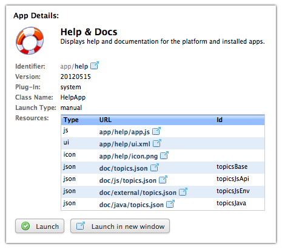

RapidContext
Access · Discovery · Insight
www.rapidcontext.com

RapidContext app development is mostly based on JavaScript, HTML and CSS. The apps execute in the web browsers, so care must therefore be taken to follow appropriate web standards to remain compatible with all browsers. The most important of these are listed below:
RapidContext also provides a number of JavaScript libraries that greatly simplify the development:
The app source code and resources are stored on the server, but will be transferred to the web browser upon launch. Each app has an app configuration (or manifest file) that lists the resources required for launch along with some meta-data. These can be inspected in the Admin app, as shown in the screenshot below.

The app configuration is placed in the plugin/local/app/ directory (or the app/ directory in your plug-in). The file name should follow normal storage rules, i.e. [app identifier].properties. In the file, app meta-data is specified with a list of URL resources required to launch the app. If an app is not properly declared in the configuration file, it will not be visible to the web browser. Below follows a simple example:
# General properties name = Example App description = A simple example app to play and experiment with. className = ExampleApp # Resources array resources.0.type = code resources.0.url = app/example/app.js resources.1.type = ui resources.1.url = app/example/ui.xml resources.2.type = icon resources.2.url = app/example/icon.png
In the example above, the three files app.js, ui.xml
and icon.png are referenced and must be located at the specified
URL. Any app resource of type code
is dynamically loaded as a
JavaScript file on the first app launch. Subsequent launches will reuse the
previously loaded file, so Ctrl-R must be used to force an app
reload.
The available app configuration parameters are as follows:
this.resource.[id].
myapp/*.jsor
dir/myapp/**).
/characters to indicate directories.
All apps are implemented as JavaScript objects with constructor function
(i.e. as JavaScript "classes"). Normally a single code
resource contains the source code for the app. By declaring multiple
code
resources, several files can be loaded (in the
specified order). Upon launch, the app constructor function is called and a
new app instance object should be created.
Apps should take their execution environment into consideration:
this).
The JavaScript constructor function for an app must be named
exactly as specified by the className
property in the app configuration. The app instance objects must also contain
two methods — start() and stop() — that
handle the app lifecycle. Below is an example JavaScript file that implements
a minimal example app:
/** * Creates a new ExampleApp instance. This function is called * once all app resources have been loaded. It is called as a * constructor function, so it will create a new object with * the prototype inherited from this function. */ function ExampleApp() { // Constructor code. No UI or external calls here. } /** * Starts the app execution. This function is called when the * user interface has been successfully created. */ ExampleApp.prototype.start = function() { // this.ui -- a map of identifiers from the UI XML // this.ui.root -- the user interface parent widget // this.ui.overlay -- the overlay widget for the app // this.resource -- a map of resource URL:s } /** * Stops the app execution. This function is called when the * app should terminate, but before the user interface has * been destroyed. The app should kill running requests and * similar when this method is called. */ ExampleApp.prototype.stop = function() { // stop async requests and other pending actions }
The RapidContext.App.startApp() function is responsible for app loading, instance creation and calling the start() method once the user interface has been created. Each app instance will also inherit all properties from app config, with the following adjustments:
idattribute. The property value is set to the UI widget or DOM node.
idproperty in app configuration. The value is a string with the resource URL. Note that all resources are also available in the
this.resourcesarray.
The user interface for an app is normally contained inside an RapidContext.Widget.TabContainer widget. The app itself is assigned a RapidContext.Widget.Pane widget inside which it is responsible for creating and managing its own user interface.
The RapidContext platform simplifies the user interface creation by optionally building it from a serialized XML format. The user interface XML is normally stored in a ui.xml file in the same location as the app JavaScript source code and other resources. To use the automatic user interface creation, an app resource is specified as follows:
resources.#.type = ui resources.#.url = example/ui.xml
The ui.xml file contains a mix of HTML (in XML form) and references to user interface widgets defined in the RapidContext.Widget namespace. The XML is processed by the RapidContext.UI.buildUI function. Here is a simple example:
<?xml version="1.0" encoding="UTF-8"?> <ui> <Button id="test" icon="COMMENT">Press Me</Button> </ui>
The root XML tag in a ui.xml file should always be <ui>. Inside this tag, all well-formed XML tags will be interpreted as follows:
idAttribute — The
idattribute is used to map the DOM node to the app this.ui object. It is NOT set on the HTML DOM node created. The benefit of this solution is that any identified DOM nodes are immediately available, without going through the DOM API document.getElementById. Also, this solution avoids collisions when the same app is launched twice or when multiple apps use the same identifiers.
classAttribute — The
classattribute is set on the HTML DOM node created (similar to HTML). Note that widgets have additional CSS classes, potentially causing conflicts with specific style settings (see below).
w,
h&
aAttributes— The attributes
w,
hand
aare used in a call to RapidContext.Util.registerSizeConstraints(). This sets up a JavaScript function for the node that will calculate the appropriate size and/or aspect ratio whenever RapidContext.Util.resizeElements() is called (handled automatically on window resize).
The platform user interface is default styled by two CSS files — css/style.css and css/widget.css. When the default styles are not sufficient, a number of options are available:
styleAttributes — The easiest way to modify the style of a widget or an HTML DOM node is by setting the
styleattribute. This can be done either in the ui.xml file or through the MochiKit.Style.setStyle() function.
classattributes to avoid restyling other apps.
classattributes to avoid restyling other apps.
RapidContext provides a default web listener for HTTP requests. This is the web listener that launches the start app and handles the platform web requests. It is configured in the webservice/root.properties file:
# General properties id = root type = webservice/app description = The root (default) web service. This launches the start app \ and provides access to the storage files. path = /files/ app = start # Match array match.1.path = /
Although the default web listener responds to all requests, it is easy to add a custom listener to handle requests for a specific host, path, etc. The example below shows a simple file web server:
# General properties id = www.test.com type = webservice/file description = A simple static web site service. path = files/www.test.com/ # Match array match.1.host = www.test.com match.2.host = www.test.net match.3.host = www.test.org
Web listeners configurations are placed in the plugin/local/webservice/ directory (or the webservice/ directory in your plug-in). The file name should follow normal storage rules, i.e. [identifier].properties. A number of web service types are available and custom ones can also be implemented in Java.
The available web service configuration parameters are as follows:
httpor
https). Defaults to blank, meaning that any protocol will match. A non-blank value contributes 300 points to the request match score.
The webservice/file listener automatically maps directories
to index.html
files. If a requested file is missing, the
parent directories are searched for the nearest 404.html
or
index.html
file. This allows single-page apps to match any
URL.
The webservice/file and webservice/app listeners support the following additional parameters:
/files/.
The webservice/app listeners support the following additional parameters:
start.
login.
RapidContext.
en.
width=device-width, initial-scale=1.
The webservice/procedure listeners support the following additional parameters:
json(for serialized JSON data, the default), or
text(for plain text).
json+metadata(for a serialized JSON object with
dataor
errorproperties, the default),
json(for just the serialized JSON response), or
text(for plain text output).